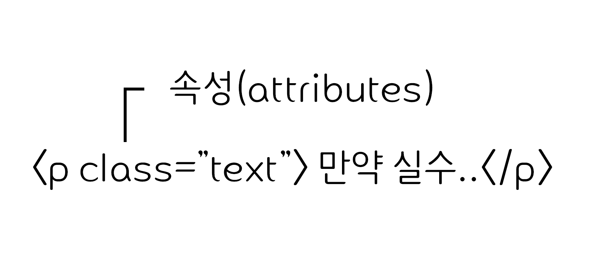

HTML(HyperText Markup Lamguage)은 웹 문서를 표현하기 위한 하이퍼텍스트 마크업
언어입니다.
하이퍼텍스트란 문서에서 다른 문서로 이동하는 것을 말하며, 마크업이란 태그를 사용하여 콘텐츠의 의미를 부여하는 것입니다.
HTML (Hypertext Markup Language,하이퍼텍스트 마크업 언어)는 프로그래밍 언어는 아니고, 우리가 보는 웹페이지가 어떻게 구조화되어 있는지 브라우저로
하여금 알 수 있도록 하는 마크업 언어입니다.이는 개발자로 하여금 복잡하게도 간단하게도 프로그래밍 할 수 있습니다. HTML은 elements로 구성되어 있으며, 이들은
적절한 방법으로 나타내고 실행하기 위해 각 컨텐츠의 여러 부분들을 감싸고 마크업 합니다. tags 는 웹 상의 다른 페이지로 이동하게 하는 하이퍼링크 내용들을 생성하거나,
단어를 강조하는 등의 역할을 합니다.
태그(tag)
태그는 HTML에서 정보를 전달하는 방식을 의미합니다.
열린 태그(Opening tag) : 이것은 요소의 이름과(이 경우 p), 열고 닫는 꺽쇠 괄호로 구성됩니다. 요소가 시작(이 경우 단락의 시작 부분)부터 효과가
적용되기 시작합니다.
닫는 태그(Closing tag) : 이것은 요소의 이름 앞에 슬래시(/)가 있는것을 제외하면 열린 태그와 같습니다. 이것은 요소의 끝(이 경우 단락의 끝 부분)에
위치합니다. 닫는 태그를 적어주지 않는 것은 흔한 초심자의 오류이며, 이것은 이상한 결과를 낳게됩니다.
내용(Content) : 요소의 내용이며, 이 경우 단순한 텍스트이다.
요소(element) : 여는 태그, 닫는 태그, 내용을 통틀어 요소라고합니다.
속성(Attributes)
HTML 속성은 태그에 기본 기능 및 유형을 설정하고, 태그의 동작으로제어하기 위한 용어입니다.

요소 이름 다음에 바로 오는 속성은 요소 이름과 속성 사이에 공백이 있어야 되고, 하나 이상의 속성들이 있는 경우엔 속성 사이에 공백이 있어야 합니다.
속성 이름 다음엔 등호(=)가 붙습니다.
속성 값은 열고 닫는 따옴표로 감싸야 합니다.
요소(Element)
요소는 HTML을 구성하는 가장 기본 단위입니다.
태그의 시작태그와 끝나는 태그 사이의 범위를 요소라고 합니다.
주석
주석 표시는 프로그램에 영향을 미치지 않으며, 설명이나 메모를 목적으로 사용합니다.
<!-- 주석표시 -->;
블록요소/인라인 요소
블록요소는 박스, 인라인 요소는 텍스트를 의미합니다.
블록엔리먼트(Block Element)
독립된 박스 영역으로 한 줄에 하나에 블록요소만 표현 할 수 있습니다.
블록 요소에는 블록 요소와 인라인 요소를 포함 할 수 있습니다.
<div>, <p>, <ul>, <li>, <hr>, <address>
인라인 엘리먼트(Inline Element)
독립된 텍스트 영향으로 한 줄에 여러개의 인라인 요소를 표현 할 수 있습니다.
인라인 요소에는 블록요소가 포함 될 수 없지만, 인라인 요소는 포함 할 수 있습니다.
<span> ,<a> , <img> , <input> , <button> ,
<br>
DTD 선언
웹 문서를 제작하기 위해서는 웹 문서 유형을 설정해야 합니다.
DTD(Document Type Declaration)을 설정하지 않거나 잘못 설정하면 브라우저에 따라 화면이 다르게 나오거나 렌더링이 달리지기 때문에 독타입을
설정해야 합니다.
<!-- HTML 4.01 Strict -->
<!DOCTYPE HTML PUBLIC "-//W3C//DTD HTML 4.01//EN" "http://www.w3.org/TR/html4/strict.dtd">
<!-- HTML 4.01 Transitional -->
<!DOCTYPE HTML PUBLIC "-//W3C//DTD HTML 4.01 Transitional//EN" "http://www.w3.org/TR/html4/loose.dtd">
<!-- HTML 4.01 Frameset -->
<!DOCTYPE HTML PUBLIC "-//W3C//DTD HTML 4.01 Frameset//EN" "http://www.w3.org/TR/html4/frameset.dtd">
<!-- XHTML 1.0 Strict -->
<!DOCTYPE html PUBLIC "-//W3C//DTD XHTML 1.0 Strict//EN" "http://www.w3.org/TR/xhtml1/DTD/xhtml1-strict.dtd">
<!-- XHTML 1.0 Transitional -->
<!DOCTYPE html PUBLIC "-//W3C//DTD XHTML 1.0 Transitional//EN" "http://www.w3.org/TR/xhtml1/DTD/xhtml1-transitional.dtd">
<!-- XHTML 1.0 Frameset -->
<!DOCTYPE html PUBLIC "-//W3C//DTD XHTML 1.0 Frameset//EN" "http://www.w3.org/TR/xhtml1/DTD/xhtml1-frameset.dtd">
<!-- XHTML 1.1 -->
<!DOCTYPE html PUBLIC "-//W3C//DTD XHTML 1.1//EN" "http://www.w3.org/TR/xhtml11/DTD/xhtml11.dtd">
<!-- html5 -->
<!DOCTYPE html>
웹 접근성 : 장애를 가진 사람들이 웹 콘텐츠를 인지하고, 편리하게 사용할 수 있으며, 그 내용이
쉬워야 하며, 견고성을 지녀야 한다. 웹 표준 : 사용자가 어떤 브라우저나 기기를 사용하더라도 내용을 동일하게 볼 수 있도록 하는 것이 웹 표준이다.
html5shiv
새로운 HTML5 섹셔닝 요소를 이전 버전의 IE6~9, Safari 4.x(iPhone 3.x)와 Firefox 3.x 에서도 작동하도록 해주는 라이브러리이다.
HTML5에 새로 나온 태그
<audio> 태그는 음악이나 다른 오디오 스트림과 같은 소리를 들려준다.
src 미디어 주소 제공
autoplay 미디어 자동 재생
loop 미디어 반복 재생
controls 사용자 에이전트가 제공하는 기본 컨트롤러를 사용
<canvas> 태그는 스크립트를 제공하여 그래프, 게임 그래픽, 기타 비주얼 이미지를 그릴 수 있다.
width canvas의 너비 지정
height canvas의 높이 지정
좌표 공간에서의 크기를 조절하는 두가지 속성은 유효한 양의 정수값이어야 한다.
canvas 요소에 동적인 작업을 하려면 스크립트 언어를 사용해야 한다.
<command> 태그는 사용자가 실행할 수 있는 명령을 나타낸다.
type 명령의 종류를 정의, radio, checkbox, command를 지정하며 기본값은 command
label command의 이름을 지정하며 값으로 빈 문자열을 쓸 수 없음
title 사용자에게 설명이나 힌트 제공
icon command 요소에 보일 아이콘 지정
disabled 사용 불가능함을 나타냄
checked type 속성이 checkbox나 radio일 때 checked 속성을 선언하면 선택된 상태로 나타남
radiogroup type 속성이 radio 일 때 토글된 커맨드의 이름을 지정할 수있는 속성
<datalist> 태그는 input 요소에 대한 미리 정의된 옵션 집합을 나타낸다.
input 요소에 "자동완성"기능을 제공하는데 사용된다. 사용자는 입력 데이터로 미리내용은 미리 정의된 옵션
option 요소를 포함할 수 있다.
input 요소에 묶여 있다.
<details> 태그는 사용자가 보거나 숨길 수 있는 추가정보를 지정하고 열고 닫을 수 있는 대화형 도구를 만드는데 사용한다.
open 세부 사항을 노출
<embed> 태그는 HTML이 아닌 외부 애플리케이션이나 대화형 컨텐츠를 포함할 때 사용한다.
src 포함하고자 하는 외부 자원의 주소 지정
type 인스턴스화 할 플러그인의 유효한 MIME 타입 지정
width 요소의 너비 정의
height 요소의 높이 정의
<figcaption> 태그는 부모 요소인 figure 요소의 캡션이나 제목을 정의한다.
<figure> 태그는 일러스트레이션, 도표, 사진, 코드 등과 자체 포함된 내용을 지정한다. 이 요소는 보통 문서의 흐름에서 단일 요소로 참조되어 제거되더라도 문서의 주된 흐름에 영향을 미치지 않는다.
<hgroup> 태그는 섹션의 제목을 나타낸다. 부제목이나 태그영역 <h1> ~ <h6> 요소들을 그룹짓기 위해 사용한다.
<keygen> 태그는 암호화를 위한 개인키와 공개키 쌍을 만들어낸다.
autofocus 페이지를 로드할 때 요소가 자동으로 포커스를 받음
challenge 값과 함께 전달되는 문자열
disabled 값을 제출하지 않음
form 명시적으로 폼 소유자를 지정
keytype 키의 유형을 정의
name 폼 제출 시에 사용되는 폼 컨트롤의 이름을 나타냄
폼 관련 요소에 속한다.
스크립트에서 form.elements와 fieldset.elements로 호출할 수 있다. (여기에서 form, fieldset은 해당 요소의 name 속성값)
레이블을 붙일 수 있다.
폼을 전송할 때 함께 전송된다.
<mark> 태그는 문서 내에서 다른 문맥과의 관련성을 표시하기 위해 참조 목적으로 마킹, 혹은 하이라이팅 한 텍스트 집합을 나타낸다.
인용구의 특정한 부분으로 주의를 환기시키기 위해 mark 요소를 사용한다.
"구문 강조"와는 다른 의미로 구문 강조에 쓰기엔 span 요소가 좀 더 적절하다.
원래는 강조되지 않았었던 텍스트를 인용문 일부에서 mark 요소로 하이라이트할 경우 일반적인 표현 관습대로 인용문 내의 mark 요소를 이태릭체로 표시할 수 있다.
텍스트에서 "중요성"(strong)을 나타내는 것과 "연관성"(mark)을 나타내는 것의 차이가 있다. 문장과 관련이 없으니 중요한 부분을 나타내고자 할때는 mark 요소보다는 strong 요소를 사용하는 것이 더 적합하다.
<mark> 태그는 알려진 범위 내에서의 스칼라 측정 또는 분포 비율을 나타낸다.
value 게이지에 표시하는 측정 값
min 범위의 최소 값
max 범위의 최대 값
low '낮음' 범위의 값
high '높음' 범위의 값
optimum '최적' 범위의 값
form 명시적으로 폼 소유자 정의
<output> 태그는 계산의 결과를 나타낸다.
for 계산의 결과와 계산에 사용되었거나 계산에 영향을 미친 값을 나타내는 요소를 명시적으로 연결
form 폼 소유자와 요소를 명시적으로 연결
name 폼 제출시에 사용되는 폼 컨트롤의 이름
<progress> 태그는 작업의 진행 상황을 나타낸다.
value 진행된 작업의 값
max 최대 작업양
form 명시적으로 폼 소유자 정의
<rp> 태그는 루비 주석을 지원하지 않는 사용자에게 루비 텍스트를 괄호로 둘러싸서 표현하기 위해 사용된다.
<rt> 태그는 루비 텍스트의 루비 주석을 나타낸다.
<ruby> 태그는 루비 주석을 정의한다. 루비 주석은 텍스트 주변(보통 위에)에 나타나는 텍스트로 주로 동아시아권 언어에서 발음이나 주석으로 사용된다.
<source> 태그는 video 요소 및 audio 요소와 같은 미디어 요소에서 사용할 수 있는 대체 미디어 자원을 정의한다.
src 미디어 자원 주소 정의
type 사용할 수 있는 타입의 자원인지 확인
media 사용할 수 있는 미디어 자원인지 확인
<track> 태그는 video 요소 및 audio 요소와 같은 미디어 요소에 대한 텍스트 트랙을 지정한다. 이 요소는 자막파일이나 텍스트를 포함하는 다른 파일을 자정하는데 사용된다.
kind 텍스트 트랙의 종류 정의
src 텍스트 트랙 데이터의 주소 정의
srclang 텍스트 트랙 데이터의 언어 정의
label 사용자가 읽을 수 있는 트랙 제목 정의
default 기본 트랙 정의
<video> 태그는 비디오나 영화를 재생하는데 사용된다.
src 미디어 자원의 주소를 제공
poster 비디오를 사용할 수 없을때 보여줄 이미지
preload none, metadata, auto 키워드를 지정하여 미디어의 다운로드 상태 결정
autoplay 미디어를 자동 재생
loop 미디어를 반복 재생
audio 오디오 채널을 제어
controls 사용자 에이전트가 제공하는 기본 콘트롤러를 사용
width 미디어의 가로 크기를 정의
height 미디어의 세로 크기를 정의
src 속성이 있으면 track 요소를 자식 요소로 포함할 수 있다.
src 속성이 없으면 source 요소와 track 요소를 자식 요소로 포함할 수 있다.
video 요소, audio 요소와 같은 미디어 요소는 자식 요소로 포함할 수 없다.
video 요소를 지원하지 않는 오래된 웹 브라우저에서 구형 비디오 플러그인을 시도하거나 사용자가 비디오 컨텐츠에 접근할 수 있는 방법을 제시하는 텍스트를 보여줄 수 있도록 요소 내부에 컨텐츠를 제공할 수 있다.
IE 조건부 주석
조건부 주석은 IE(익스플로러)에서만 해석해 실행시키는 주석을 말한다. 타 브라우저는 주석으로 인식해 실행시키지 않는다.
익스플로러 구 버전에서도 같은 화면을 구현 (=크로스 브라우징)하기 위한 조치이다.
IE10 표준 모드에서 조건부 주석은 지원되지 않고, JScript 조건부 주석은 지원된다.
시멘틱 태그
시멘틱 태그는 모두 div 태그와 같은 기능을 수행하는 태그다.
이전의 html에서 header나 footer를 표현하기 위해 <div> 태그를 사용하여 개발자들이 자유롭게 class명이나 id를 정의하였다면, HTML5에서는 미리 정의된 태그를 사용하게 된다.
목록형 태그들
태그
설명
<ul>
순서가 없는 목록을 쓸 때 사용하며 <li>태그와 같이 사용한다. (블릿기호는 점으로 표현된다.)
<li>
목록의 항목을 쓸 때 사용하며 <ul>태그, <ol>태그,<menu>태그와 같이 사용한다.
<li>태그 안에는 다른 목록을 중첩으로 사용 할 수 있다.
<ol>
순서가 있는 목록을 쓸 때 사용하며 <li>태그와 같이 사용한다. (블릿기호는 번호[숫자]로 표현된다.)
<dl>
설명형 목록을 쓸 때 사용한다.
<dd>
용어를 설명하는데 사용한다.
<dt>
용어의 제목을 넣을때 사용한다.
<section>
section태그는 일반적으로 문서의 콘텐츠 영역을 설정할 때 사용합니다.
콘텐츠와 관련된 한 가지 주제 영역을 의미합니다.
section요소는 문장이나 스타일링 요소가 아니기 때문에 편의나 영역을 위함이라면 div태그가 좋습니다.
section요소는 제목이 없는 경우 섹션이라고 할 수 없기 때문에 제목을 제공해야 합니다.
secion요소는 일반적인 영역의 주제가 아니라면 구체적인 요소를 사용하는 것이 더 적절 합니다.
<nav>
nav태그는 웹 페이지 내에서 이동 할 수 있는 네비게이션 링크 그룹을
설정합니다.
nav는 문서의 핵심적인 페이지 메뉴 및 서브 메뉴에서 사용합니다.
nav요소는 문서에서 주로 한 번만 사용합니다.
문서안에 링크가 포함된 콘텐츠는 nav를 사용하지 않습니다.
nav는 핵심적인 네비게이션에 사용해야 하므로 푸터 내에 링크 그룹의 사용은 적절하지 않습니다.
<main>
main태그는 웹 문서에서 주요 콘텐트 영역을 나타낼 때 사용합니다.
main는 웹 페이지 내에서 한 번만 사용할 수 있으며, 접근성과 검색 노출을 향상시킵니다
article, article, footer, nav
문서안에 링크가 포함된 콘텐츠는 nav를 사용하지 않습니다.
nav는 핵심적인 네비게이션에 사용해야 하므로 푸터 내에 링크 그룹의 사용은 적절하지 않습니다.
<aside>
aside태그는 메인 콘텐츠와 관련된 사이트 콘텐츠 영역을 설정합니다.
aside는 메인 콘텐츠와 관련되 사이드의 정보, 광고 등 부분적인 정보를 그룹화 할때 사용합니다.
<header>
header태그는 웹 문서의 헤더 영역을 설정합니다.
header는 웹 페이지의 소개, 네비게이션 영역, 검색 영역, 로고 영역을 포함하는 영역입니다.
header태그에는 제목 태그가 포함 될 수 있으며, 필수 조건은 아닙니다.
header는 섹션 콘텐츠가 아닌 그룹화하기 위한 요소이므로 section
<footer>
footer태그는 웹 문서의 푸더 영역을 설정합니다.
footer태그는 저작권 정보, 회사 정보, 관련 링크, 바닥글, 주소 사이트 정보등을 포함 하는 콘텐츠 영역입니다.
footer태그는 섹션 콘텐츠가 아닌 그룹을 나타내는 요소이며,
section,article,aside태그를 포함 시킬수 있습니다.
section요소를 포함할수 있습니다.
<article>
article태그는 웹 문서의 독립적인 항목을 나타내는 콘텐츠를 의미합니다.
article태그는 신문기사, 잡지, 브로그 항목, 게시판 글 등의 독립적인 항목을 나타냅니다.
section태그는 하나의 주제를 나타낸다면, arricle태그는 주제를 묶은 독립적인 콘텐츠 입니다.
section요소를 포함할수 있습니다.
<div>
div태그는 문서의 섹션을 만들거나 영역을 만들 때 사용합니다.
<p>
p태그는 문단을 쓸 때 사용합니다.
p태그와 p태그 사이에는 한 줄의 행간이 표현됩니다.
<ul>
ul태그는 순서가 없는 목록을 쓸때 사용합니다.
ul태그는 li태그와 같이 사용됩니다.
블릿기호는 점으로 표현됩니다.
<li>
li태그는 목록에 항목을 쓸때 사용합니다.
li태그는 ul태그, ol태그, munu태그와 같이 사용합니다.
li태그 안에는 다른 목록을 중첩으로 사용할 수 있습니다.
<ol>
ol태그는 순서가 있는 목록을 쓸때 사용합니다.
ol태그는 li태그와 같이 사용됩니다.
블릿기호는 번호(숫자)로 표현됩니다.
<a>
a태그는 하이퍼 링크를 설정합니다.
하이퍼 링크란 현재 페이지에서 다른 페이지 이동을 말합니다.
방문하지 않은 링크는 밑줄과 파란색으로 표현됩니다.
방문하지 않은 링크는 밑줄과 보라색으로 표현됩니다.
활성화된 링크는 밑줄과 빨간색으로 표현 됩니다.
HTML5에서는 예외적으로 인라인 구조인 a 태그에 블록 요소를 포함할 수 있습니다.
<title>
title 요소는 페이지의 <head>안에서 사용해야 합니다.
하이퍼 링크란 현재 페이지에서 다른 페이지 이동을 말합니다.
방문하지 않은 링크는 밑줄과 파란색으로 표현됩니다.
방문한 링크는 밑줄과 보라색으로 표현됩니다.
활성화된 링크는 밑줄과 빨간색으로 표현됩니다.
HTML5에서는 예외적으로 인라인 구조인 a 태그에 블록 요소를 포함 할 수 있습니다.
<meta>
meta 태그는 웹 문서에 대한 여러가지 정보를 제공합니다.
메타태그의 종류와 설명을 알려주는 표 입니다.
메타데이터
설명
charset
웹 페이지 언어를 설정합니다.
author
웹 페이지를 만든 사람을 설정합니다.
description
웹 페이지에 대한 설명을 설정합니다.
keywords
웹 페이지에 대한 키워드를 설정합니다.
application-name
웹 페이지에 관련된 응용 프로그램 이름을 설정합니다.
generator
웹 페이지에서 만든 소프트웨어의 이름을 설정합니다.
<!-- HTML5 언어 설정-->
<meta charset="UTF-8">
<!-- HTML4 언어 설정 -->
<meta http-equiv="Content-Type" content="text/html;charset=UTF-8">
<!-- 웹 문서에 대한 제작자 설정 -->
<meta name="author" content="webstoryboy">
<!-- 웹 문서에 대한 설명 -->
<meta name="description" content="이 사이트는 무슨무슨 사이트입니다.">
<!-- 웹 문서에 대한 키워드 설정 -->
<meta name="keyword" content="키워드, 키워드, 키워드">
<!-- 웹 문서에 대한 웹 응용 프로그램 이름 -->
<meta name="application-name" content="응용 프로그램 이름">
<!-- 웹 문서에 대한 소프트웨어 이름 -->
<meta name="generator" content="소프트웨어 이름">
<meta name="viewport" content="width=device-width, initial-scale=1.0">
<table>
table 태그는 HTML문서에서 표를 만드는 태그 입니다. 행과 열을 표현하기 위해<tr>,
<td> 들의 태그와 함께 작성하게 됩니다.
태그
설명
<tr>
table row 약자로 표의 제목을 쓰는 역할
<td>
table row약자로, 가로줄을 만드는 역할
<tbody>
table data약자로, 셀을 만드는 역할: 테이블 내용
<thead>
테이블 제목
<tfoot>
끝에 오는 내용
<caption>
요소는 표의 설명 또는 제목으 나타냅니다.
<col>
표의 열을 나타내며, 열에 속하는 칸에 공통된 의미를 부여할 때 사용합니다.
<colgroup>
요소는 표의 열을 묶는 그룹을 정의합니다.
<colspan>
가로로 표의 열을 묶는 태그
<rowspan>
세로로 표의 열을 묶는 태그
<tr>
테이블 행을 정의합니다.
하나 이상의 <th> 또는 <td> 요소를 포함합니다.
<td>
테이블 셀을 정의합니다.
헤더 셀: 헤더 정보를 포함합니다 ( <th> 요소로 작성 됨)
표준 셀-데이터를 포함합니다 ( <td> 요소로 작성 됨)
<tbody>
HTML 테이블에서 본문 내용을 그룹화하는 데 사용됩니다.
<thead> 및 <tfoot> 요소 와 함께 사용되어 테이블의 각 부분 (머리글, 본문, 바닥 글)을 지정합니다.
머리글 및 바닥 글과 독립적으로 테이블 본문을 스크롤 할 수 있습니다.
<tbody> 태그는 <caption>, <colgroup> 및 <thead> 요소 다음에 <table>
요소의 자식으로 사용되어야합니다.
<thead>
HTML 테이블에서 헤더 내용을 그룹화하는 데 사용됩니다.
<tbody> 및 <tfoot> 요소 와 함께 사용되어 테이블의 각 부분 (머리글, 본문, 바닥 글)을 지정합니다.
머리글 및 바닥 글과 독립적으로 테이블 본문을 스크롤 할 수 있습니다.
<thead> 태그는 다음 컨텍스트에서 사용해야합니다. <table> 요소의 하위 요소, <caption> 및
<colgroup> 요소 뒤 및 <tbody>, <tfoot> 및 <tr> 앞 집단.
<tfoot>
HTML 테이블에서 바닥 글 내용을 그룹화하는 데 사용됩니다.
<thead> 및 <tbody> 요소 와 함께 사용되어 테이블의 각 부분 (머리글, 본문, 바닥 글)을 지정합니다.
머리글 및 바닥 글과 독립적으로 테이블 본문을 스크롤 할 수 있습니다.
<tfoot> 태그는 <caption>, <colgroup>, <thead> 및 <tbody> 요소 뒤에
<table> 요소의 자식으로 사용해야합니다.
<caption>
테이블 캡션을 정의합니다.
<table> 태그 바로 뒤에 <caption> 태그를 삽입해야합니다.
테이블 당 하나의 캡션 만 지정할 수 있습니다.
기본적으로 테이블 캡션은 테이블 위에 가운데 정렬됩니다. 그러나 CSS 속성 text-align 및 caption-side 를 사용하여 캡션을 정렬하고 배치
할 수 있습니다.
<col>
<colgroup> 요소 내의 각 열에 대한 열 속성을 지정합니다 .
각 행에 대해 각 셀의 스타일을 반복하는 대신 전체 열에 스타일을 적용하는 데 유용합니다.
<colgroup>
테이블에서 형식화 할 하나 이상의 열 그룹을 지정합니다.
각 행에 대해 각 셀의 스타일을 반복하는 대신 전체 열에 스타일을 적용하는 데 유용합니다.
<caption> 요소 다음과 <thead>, <tbody>, <tfoot> 및 <tr> 요소 앞에
<table> 요소의 자식이어야합니다.
<colgroup> 내의 열에 다른 속성을 정의하려면 <colgroup> 태그 내의 <col> 태그를 사용해야합니다.
<hr>
hr 태그는 문서의 주제를 정리 할때 사용합니다.
<br>
br 태그는 줄바꿈을 하는 태그입니다.
<h1>~<h6까지>
h 태그는 제목태그로 1~6까지 있습니다.
<strong>
strong 태그는 해당 콘텐츠의 중요성이나 심각함, 긴급함 등을 강조할 때 사용합니다
브라우저는 일반적으로 strong 요소의 콘텐츠를 굵은 텍스트로 표현합니다.
b 요소는 콘텐츠의 중요성보다는 텍스트 자체에 주의를 끌기 위해 사용되지만, strong 요소는 콘텐츠 자체의 중요성을 강조할 때 사용됩니다.
<em>
em 태그는 강조된 텍스트(emphasized text)를 표현할 때 사용합니다.
em 요소는 HTML5에서도 여전히 지원되지만, 대신 CSS를 사용하면 더욱 다양한 효과를 줄 수 있습니다.
em 요소는 구어체 강조와 같이 문장의 의미를 변경하는데 사용되지만("I love cat." vs. "I love cat."), strong 요소는 문장의
일부분에 중요성을 추가하는데 사용됩니다.
<dt>
dt 태그는 용어와 그에 대한 설명을 리스트 형식으로 보여주는 dl요소에서 용어(term) 부분을
정의할 때 사용합니다.
브라우저는 일반적으로 strong 요소의 콘텐츠를 굵은 텍스트로 표현합니다.
dl 요소는 용어(term)나 이름(name)을 나타내는 dt 요소와 해당 용어에 대한 설명을 나타내는 dd 요소로 구성됩니다.
<dd>
dd 태그는 용어와 그에 대한 설명을 리스트 형식으로 보여주는 dl 요소에서
설명(description) 부분을 정의할 때 사용합니다.
dl> 요소는 용어(term)나 이름(name)을 나타내는 dt요소와 해당 용어에 대한 설명을 나타내는 dd요소로 구성됩니다.
<dl>
dl 태그는 용어(term)와 그에 대한 설명(description)을 리스트 형식으로 정의할 때
사용합니다.
<span>
span 태그는 HTML 문서에서 인라인 요소(inline-element)들을 하나로 묶을 때
사용합니다.
span 요소는 그 자체만으로는 어떠한 의미도 가지지 않지만, class나 id와 같은 전역 속성과 함께 사용하여 스타일링을 위해 요소들을 그룹화하거나
lang 속성과 같은 속성값을 공유하는 데 유용하게 사용할 수 있습니다.
span> 요소는 div 요소와 매우 비슷하게 사용되지만, div 요소는 블록 타입의 요소인데 반해 span 요소는 인라인 타입의 요소입니다.
<address>
address 요소는 가까운 HTML 요소의 사람, 단체, 조직 등에 대한 연락처 정보를 나타냅니다.
address 태그는 문서 또는 기사 작성자 / 소유자의 연락처 정보를 정의합니다.
address 요소의 텍스트는 일반적으로 기울임 꼴로 렌더링됩니다 . 대부분의 브라우저는 주소 요소 앞뒤에 줄 바꿈을 추가합니다.
address 요소가 body 요소 안에 있으면 문서의 연락처 정보를 나타냅니다.
address 요소가 article 요소 안에 있으면 해당 기사의 연락처 정보를 나타냅니다.
<form>
사용자 입력을 수집하는 데 사용되는 양식을 정의합니다.
요소는 정보를 제출하기 위한 대화형 컨트롤을 포함하는 문서 구획을 나타냅니다.
form 요소를 꾸밀 땐, 모든 elements의 유효성을 나타내는 CSS :valid와 :invalid 의사 클래스를 사용할 수 있습니다.
<fieldset>
요소는 웹 양식의 여러 컨트롤과 레이블(label)을 묶을 때 사용합니다.
fieldset 태그는 관련 요소 주위에 상자를 그립니다.
fieldset 태그는 양식에서 관련 요소를 그룹화하는 데 사용됩니다
<legend>
legend 태그는 fieldset 요소 의 캡션을 정의합니다 .
legend> 요소는 부모 fieldset 콘텐츠의 설명을 나타냅니다.
<input>
input 태그는 사용자가 데이터를 입력 할 수있는 입력 필드를 지정합니다.
input 요소는 form 요소 내에서 사용되어 사용자가 데이터를 입력 할 수있는 입력 컨트롤을 선언합니다.
input 요소는 비어 있으며 속성 만 포함합니다.
입력 필드는 type 속성에 따라 여러 가지 방법으로 달라질 수 있습니다
속성
설명
<text>
기본 텍스트를 입력하는 창
<password>
비밀번호 입력하는 창 생성
<button>
기본 버튼 생성
<raido>
라디오 버튼 생성
<checkbox>
체크박스 생성
<file>
파일 선택하는 버튼 생성
<image>
이미지를 버튼처럼 사용
<hidden>
사용자에게 입력받지 않고 기본으로 설정된 값을 서버로 전송.
<submit>
서버로 제출하는 버튼 생성
<reset>
form에서 입력한 input값들을 reset시킴
<label>
input 태그는 사용자가 데이터를 입력 할 수있는 입력 필드를 지정합니다.
input 요소는 form 요소 내에서 사용되어 사용자가 데이터를 입력 할 수있는 입력 컨트롤을 선언합니다.
input 요소는 비어 있으며 속성 만 포함합니다.
입력 필드는 type 속성에 따라 여러 가지 방법으로 달라질 수 있습니다
<button>
button 태그는 클릭 가능한 버튼을 정의합니다.
button 요소의 type 속성을 지정하십시오. 브라우저마다 다른 button요소에 다른 기본 유형을 사용합니다.
input 요소는 비어 있으며 속성 만 포함합니다.
요소 안에는 텍스트 나 이미지와 같은 내용을 넣을 수 있습니다. 이것은이 요소와 input 요소로 만든 버튼의 차이점입니다.
<i>
i 태그는 글자를 기울여서 표시하는 태그로, italic의 약자입니다.
CSS에서 font-style을 italic으로 설정하는 것과 같은 효과를 나타냅니다.
다음과 같은 의미 요소(semantic element) 중에서 사용하기에 적당한 요소를 찾지 못했을 때만 i요소를 사용할 수 있습니다.
<cite> : 창작물의 제목
<dfn> : 용어(term)의 정의
<em> : 강조된 텍스트
<mark> : 하이라이트된(highlighted) 텍스트
<strong> : 긴급하거나 중요한 텍스트
<figure>
figure 요소는 독립적인 콘텐츠를 표현합니다.
figcaption 요소를 사용해 설명을 붙일 수 있습니다. 피규어, 설명, 콘텐츠는 하나의 단위로 참조됩니다
보통 는 주 문서 플로우가 참조하지만, 다른 부분이나 부록으로 이동해도 문제 없는 이미지, 삽화, 도표, 코드 조각 등을 맡습니다.
figure는 구획 루트이므로 figure 요소의 콘텐츠는 문서의 주 개요에서 제외됩니다.
<figcapion>
figcaption> 요소는 부모 요소가 포함하는 다른 콘텐츠에 대한 설명 혹은 범례를 나타냅니다.
figcaption 태그는 figure 요소 의 캡션을 정의합니다 .
figcaption 요소는 figure 요소의 첫 번째 또는 마지막 자식으로 배치 될 수 있습니다.
figcaption 태그는 HTML 의 이벤트 속성 도 지원합니다 .
figcaption 태그는 HTML 의 전역 속성 도 지원합니다 .
대부분의 브라우저는 figcaption 요소를 기본값으로 표시합니다.
<video>
video 태그는 비디오나 영화를 재생하는데 사용된다.
HTML5 이전에는 플러그인 (예 : 플래시)이있는 브라우저에서만 비디오를 재생할 수있었습니다.
video 요소를 지원하지 않는 오래된 웹 브라우저에서 구형 비디오 플러그인을 시도하거나 사용자가 비디오 컨텐츠에 접근할 수 있는 방법을 제시하는 텍스트를 보여줄 수 있도록 요소 내부에 컨텐츠를 제공할 수 있다.
src 미디어 자원의 주소를 제공
controls속성은 재생, 일시 중지 및 볼륨과 같은 비디오 컨트롤을 추가합니다.
source요소를 사용하면 브라우저에서 선택할 수있는 대체 비디오 파일을 지정할 수 있습니다. 브라우저는 처음 인식 된 형식을 사용합니다.